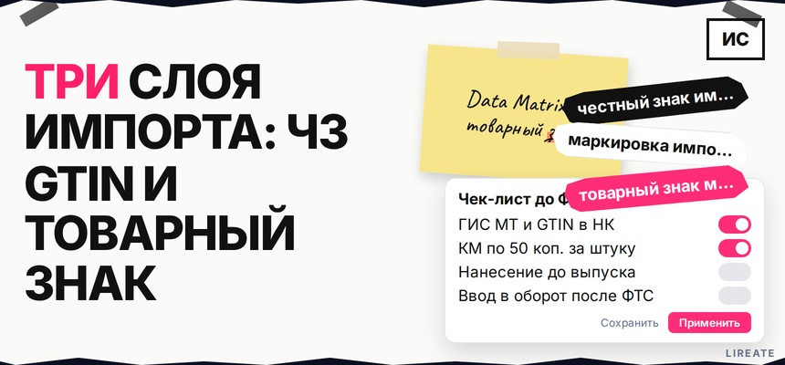

Вы везёте партию под своим логотипом, а таможня спрашивает про коды, декларант требует GTIN, а юрист предупреждает про чужой товарный знак на упаковке. "Честный знак" при импорте - это не регистрация бренда в Роспатенте, и наоборот. Ниже вы разведёте три независимых слоя, проверите свою товарную группу, пройдёте чек-лист от заказа кодов до ввода в оборот и отдельно закроете вопрос с названием бренда на коробке и в Национальном каталоге.

TL;DR / Быстрый инсайт: ГИС МТ "Честный знак" - государственная цифровая маркировка: GTIN в Национальном каталоге, заказ кодов Data Matrix (КМ) по 50 коп. за штуку, нанесение до выпуска ФТС (вне ЕАЭС) или до пересечения границы (из ЕАЭС), затем документ "Ввод в оборот". Товарный знак - право на имя и логотип после регистрации в Роспатенте; ЧЗ его не заменяет. На таможне ФТС сверяет КИ в декларации с ГИС МТ; для блокировки контрафакта по бренду смотрите ТРОИС отдельно. С 01.09.2026 действуют автоштрафы по данным системы (ФЗ № 120-ФЗ).
КМ (код маркировки) - уникальный Data Matrix на каждую единицу товара; GTIN - международный номер позиции в каталоге, как "артикул семейства". Импортёр-резидент РФ, который первым владеет товаром в России, обычно и отвечает за маркировку. Материал на 30.10.2026 не заменяет таможенную или патентную консультацию.
Три системы не подменяют друг друга. Путаница "нанесли Data Matrix - бренд наш" - частая причина штрафов и претензий правообладателей.
| Слой | Что даёт | Где оформлять |
|---|---|---|
| Честный знак (ГИС МТ) | Прослеживаемость партии, контроль оборота, связка с ФТС | markirovka.ru, личный кабинет участника |
| Товарный знак | Исключительное право на обозначение для однородных товаров (ст. 1483 ГК РФ) | Роспатент, Поисковая платформа |
| Русская маркировка на упаковке | Требования ТР ЕАЭС (язык, состав, изготовитель) | Дизайн этикетки, договор с производителем |
| ТРОИС | Превентивная остановка подозрительного ввоза по зарегистрированному ТЗ | Таможенный реестр объектов ИС ФТС |
Делайте: вести три колонки в рабочем чек-листе (маркировка, бренд, ввоз). Не делайте: называть код Data Matrix "товарным знаком" или считать свидетельство Роспатента заменой КМ.
Итоговый вердикт: если вы импортируете свой бренд сериями, закладывайте и цепочку ЧЗ, и проверку или регистрацию ТЗ до оплаты производству за партию.
Обязательность зависит от товарной группы и даты, с которой импорт вашей категории уже подлежит маркировке. Ориентир - календарь на markirovka.ru и честныйзнак.рф по коду ТН ВЭД или ОКПД2.
Пример: санитарно-гигиеническая группа - регистрация с 01.09.2026, ввод сведений с 01.10.2026 (ПП № 656). Свою дату возьмите из календаря группы.
Делайте: зафиксировать группу до заказа у фабрики. Не делайте: копировать чужой календарь без сверки ТН ВЭД.
Логика одна: карточка НК → заказ КМ → нанесение → отчёт → таможня → ввод в оборот; сроки зависят от маршрута.
| Этап | Ввоз вне ЕАЭС (например, Китай) | Ввоз из стран ЕАЭС |
|---|---|---|
| Когда наносить КМ | До помещения под процедуру выпуска для внутреннего потребления (допустим склад/транзит до маркировки по правилам группы) | До фактического пересечения границы РФ |
| Уведомление | По правилам группы при декларировании | О трансграничной торговле - не позднее чем за 5 рабочих дней до ввоза (ряд групп) |
| Ввод в оборот | Документ "Импорт с ФТС" с номером ДТ - до продажи | "Трансграничная торговля" / "Произведён в странах ЕАЭС", сроки по группе (часто 3 рабочих дня после ввоза) |
Цепочка импорта вне ЕАЭС: регистрация в ГИС МТ (УКЭП) → карточка НК с GTIN → заказ КМ ("Ввезён в РФ") → нанесение на заводе или хабе → отчёт о нанесении → ДТ с КИ в графе 31 → выпуск ФТС → "Ввод в оборот. Импорт с ФТС" → опт/розница с кодами в УПД
Делайте: хранить сканы отчётов и номер ДТ рядом с заказом КМ. Не делайте: отгружать на маркетплейс до статуса ввода в оборот.
Перед серийным импортом проверьте коллизии в Поисковой платформе или убедитесь, что действует ваше свидетельство на однородные классы. Порядок - в чек-листе по реестрам.
В НК укажите зарегистрированный ТЗ; при плане заявки - сопровождение регистрации на Лирейт. Делайте: согласовать макет до тиража. Не делайте: копировать чужой стиль знака.
После выпуска ФТС оформите ввод с номером ДТ. Для маркетплейсов сверьте требования Ozon и Wildberries после легального ввода. Делайте: выгружать коды в УПД. Не делайте: смешивать промаркированный и "забытый" товар.
ТРОИС помогает ФТС приостановить ввоз по вашему зарегистрированному ТЗ. Это не замена КМ. Делайте: включить знак в реестр после свидетельства. Не делайте: откладывать до первого конфиската.
По ст. 15.12 КоАП за ввоз без маркировки: ИП 5-10 тыс. руб., юрлица 50-100 тыс. руб. (ч. 1); оборот без маркировки - выше (ч. 2). С 01.09.2026 возможны автоштрафы по ГИС МТ (120-ФЗ). Делайте: мониторить отклонения в ЛК. Не делайте: игнорировать красные статусы.
Делайте: один ответственный за ЧЗ и один за ИС в команде или у подрядчиков. Не делайте: делить партию между "промаркированным" и "на потом".
Сохраните чек-лист к каждой группе: календарь ЧЗ, макет ТЗ, коды и ДТ в одной папке. Бренд в Роспатенте ведите параллельно таможне. Ещё материалы - в рубрике "Бизнес"; при нескольких группах подключайте интегратора ЭДО и поверенного до отгрузки.
Материал проверен: редакция Лирейт, практика маркировки импорта и регистрации товарных знаков.
Достоверность данных: порядок импорта в ГИС МТ, тариф 50 коп. за КМ, связка ФТС-ГИС МТ, ст. 15.12 КоАП и ФЗ № 120-ФЗ сверены с markirovka.ru, КонсультантПлюс и astral.ru на 30.10.2026. Показы Яндекс Вордстат в среде подготовки материала не запрашивались.
Нет. ГИС МТ отвечает за прослеживаемость и контроль оборота; исключительное право на имя и логотип возникает после регистрации в Роспатенте. Пройдите оба трека, если продаёте под своим брендом.
Из третьих стран (вне ЕАЭС) Data Matrix наносят до выпуска для внутреннего потребления, если иное не предусмотрено для вашей группы. Из стран ЕАЭС - до пересечения границы РФ; ввод оформляют как трансграничную торговлю, не путайте с сценарием по ДТ.
Для глобального GTIN, уже присвоенного производителом, регистрация в ГС1 РУС обычно не обязательна. Префиксы 460-469 и правила вашей группы проверьте в инструкции ЦРПТ до заказа кодов.
Укажите зарегистрированное обозначение, если свидетельство есть; не присваивайте чужой знак. Согласуйте написание бренда с макетом упаковки и классами МКТУ в Роспатенте.
Для ряда групп допустимы транзит или склад до нанесения, но только в рамках процедур, описанных для вашей категории на markirovka.ru. Не планируйте розничную продажу до ввода в оборот после выпуска.
Ст. 15.12 КоАП задаёт базовые санкции за отсутствие маркировки и оборот немаркированного товара. С 01.09.2026 протоколы могут формироваться автоматически по данным ГИС МТ по 120-ФЗ, в том числе за нарушения после системных запретов оборота. Сверьте актуальные суммы в КоАП перед отгрузкой.
КМ подтверждает легальность вашей промаркированной партии в российском обороте. ТРОИС помогает таможне остановить ввоз партий, нарушающих ваше зарегистрированное ТЗ. Подайте заявление на включение знака в реестр, если риск контрафакта высокий.